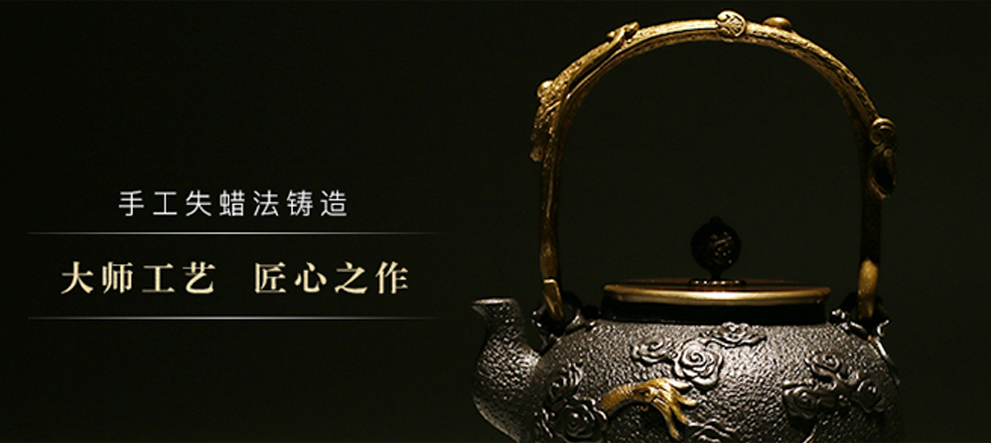
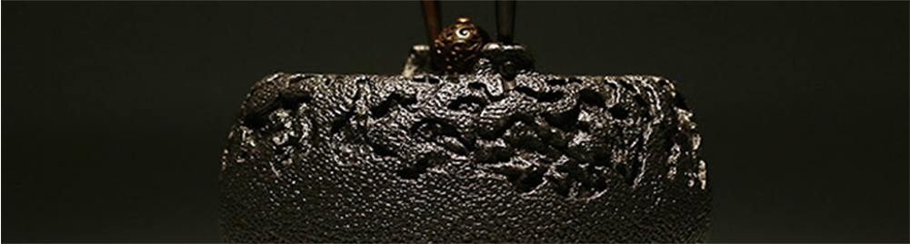

1. 铁壶第一次使用，先将5-10克茶叶放入铁壶网内，加水蒸煮约10分钟。如此茶叶中所含的丹宁和铁壶中溶解出的铁份,会在铁壶表面形成一层丹宁铁的皮膜,将更不容意生绣；同时可去除新壶的异味。
2.烧开后将壶内水倒掉，重复2-3次，直至水质清澈即可。建议新壶刚开始使用时请每天使用，让水垢能迅速付着。
3.铁壶适合的热源是炭火现在使用电热炉和瓦斯炉，电磁炉代替也可以。.日常使用时，请装8分满的水，以免水沸腾后溢出。铁壶使用约5天后，内壁会出现猩红色斑点，10天左右会出现白色的水垢。这为正常现象，只要水不混浊是不影响饮用的。
4. 每次使用后，开小火将壶内水分充分蒸发，再用干的软布擦干，保持壶体干燥，不要壶内剩水过夜。防止铁壶生锈，影响使用寿命。利用丝瓜瓤加水，将壶内的锈斑剥落，反复多次直到再无铁锈脱落。
5.发酵程度低的茶类为主。例如：高山茶、绿茶、普洱新茶等将5-10克茶叶放入铁壶，加水蒸煮约10分钟。茶叶中所含的丹宁和铁壶中溶解出的铁份,会在铁壶表面形成一层丹宁铁的皮膜,将更不容意生绣；同时可去除新壶的异味。烧开后将壶内水倒掉，每天重复2-3次，持续15天左右直至水质清澈即可使用。，反复多次直到再无铁锈脱落。
6.发酵程度低的茶类为主。例如：高山茶、绿茶、普洱新茶等将5-10克茶叶放入铁壶，加水蒸煮约10分钟。茶叶中所含的丹宁和铁壶中溶解出的铁份,会在铁壶表面形成一层丹宁铁的皮膜,将更不容意生绣；同时可去除新壶的异味。烧开后将壶内水倒掉，每天重复2-3次，持续15天左右直至水质清澈即可使用。

老铁壶起源于日本江户中期，而在明治时期则更加广为流传。大概都是昭和前后的作品，即1925年前后。大概有80年左右历史的铁壶，在台湾就可当做是古董品，但在日本所谓古董的定义，可能得推到江户之前即1868年前后。所以对于一般日本人而言，铁壶算是早期家庭用具。一般使用的材质是生铁，但大多数铁壶的壶盖是铜质所制。因为铁盖经蒸气熏蒸容易生锈，所以才用铜来制造壶的盖子。在壶盖材质中，有一种由7种金属熔铸车制而成的壶盖，俗称七宝铜盖。
日本铁壶来源于日本古代 。日本铁壶最早可追溯至日本江户时期，距今已有数百年之遥。时至今日除了南部铁器仍有持续创作与生产，现今备受关注的京都铁器，在昭和期间已因日本茶文化的改变及战争而断绝，铁壶在日本非常普及。几乎每家每户都会使用铁壶，而制作精美的铁壶还经常作为高贵的礼物在亲朋好友间赠送。1：10克盐调和200克醋（白醋为佳），放入壶中小火煮，不能干烧。2：5克盐配合200克清水与15克裙带菜（或海带），放入壶文火中煮。（在盐促进下海藻会释放岩藻多糖成分和褐藻酸盐钠，这个本身可以在壶内形成包浆，而且岩藻多糖成分在现代医学中发现是抑制和预防癌细胞生长的）： 放入竹节、竹根、竹叶混合250克入清水，放入壶里煮30分钟。擦干后下次就可以煮水泡茶饮用，铁壶长时间使用会愈加黑亮，而且清洗容易。外表可经常用布擦拭，让铁质的光泽渐渐的展现，使用后必须保持干燥，避免冷水冲热壶、高处摔下。同时要洼意不可干烧。由于是铁制品，若从高处落下，受到强烈撞击的话，